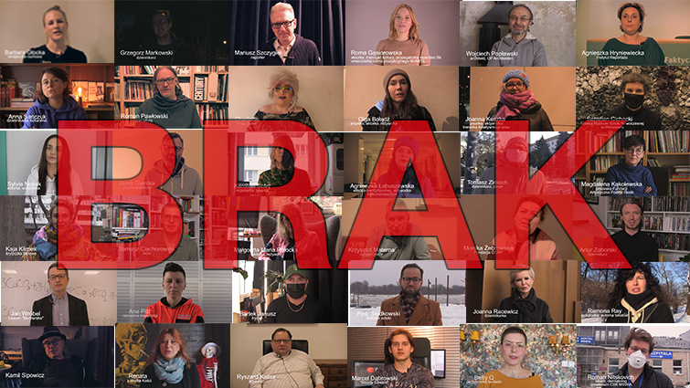

BRAK

Pomysl na film postal z emocjonalnej potrzeby i BRAKU kontaktu z ludzmi. Siedzac przez rok pandemii sama w pracowni zrozumialam, jak bardzo BRAK mi normalnego zycia. Pomyslalam, ze nie tylko ja tak mam i postanowilam zapytac o BRAK inne osoby.
BRAK to krotka, artystyczna forma filmowa, zawierajaca wypowiedzi 40 osob. Kazda z nich wybrala, gdzie w czasie pandemii mozemy sie spotkac, by nagrac wypowiedz.
Liczba ta nie jest przypadkowa. Nawiazuje do "Gadajacych Glow" Krzysztofa Kieslowskiego, w ktorym wystapily 40 i 4 osoby.
W 2020 (20+20), roku pojawienia sie pandemii w Polsce, zarowno ja, jak i film Kieslowskiego, obchodzilismy 40. urodziny.
W filmie udzial biora: Barbara Glocka, Grzegorz Markowski, Mariusz Szczygiel, Roma Gasiorowska, Wojciech Poplawski, Agnieszka Hryniewiecka, Renata Kurylowicz, Kamil Sipowicz, Anna Sanczuk, Roman Pawlowski, Charlotte Drag Queer, Olga Boladz, Joanna Keszka, Sebastian Cichocki, Ramona Rey, Roman Nitskovich, Sylvia Novak, Jacek Gientka, Karolina Sulej, Agnieszka Labuszewska, Tomasz Zimoch, Magdalena Kakolewska, Himera Drag Queen, Ryszard Kalisz, Kaja Klimek, Tomasz Ciachorowski, Malgorzata Maria Potocka, Krzysztof Materna, Monika Zebrowska, Artur Zaborski, Dagmara Malinowska, Marcel Dabrowski, Jan Wrobel, Ane Pizzl, Bartek Janusz, Piotr Slodkowski, Joanna Racewicz, Grzegorz Adamczyk, Wiktor Piatkowski, Betty Q